Disciplinary
This module will enable users to follow a streamlined approach for disciplinary incident management process. Employers can raise disciplinary incident(s) against employees (defaulters) in the organization. The employees (defaulters) are given an opportunity to make an appeal by providing their statement. On the basis of the employee’s (defaulter) statement and misdemeanor evidence, he/she can be pronounced guilty/no guilty. If found guilty, a corrective action can be taken.
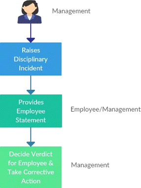
Process Description:
- User (Management) raises a disciplinary incident against an employee
- Employee can provide his/her appeal statement
- If the employee does not provide his/her appeal statement within the expiry date, then he/she will not be able to provide the appeal statement. In that case the User (Management) can provide the statement on behalf of the employee
- The User (Management) will then decide the verdict for the employee (defaulter) and select a suitable corrective action
How do I create a Violation Type?

Only a Super Admin/Management can create a violation type.
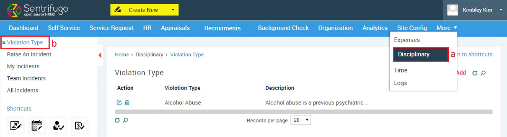
- Click Disciplinary in the top menu
- Click Violation Type on the left menu panel
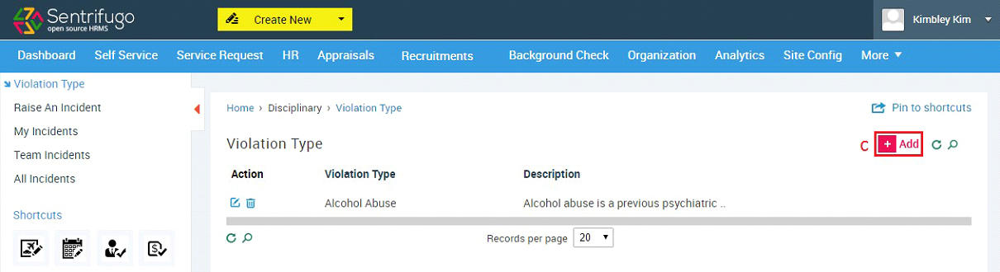
- Click +Add. button on the grid’s top right corner
- Enter ‘Violation Type’ name and its description
- Click SAVE button
How do I raise a disciplinary incident?
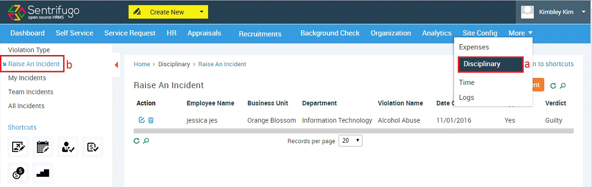
- Click Disciplinary in the top menu
- Click Raise an Incident on the left menu panel
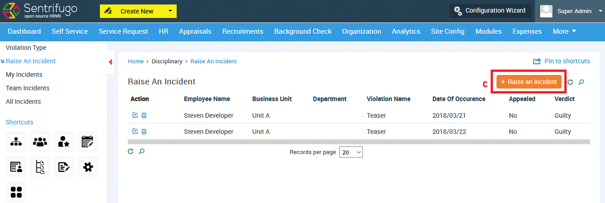
- Click Raise an incident button on the grid’s top right corner
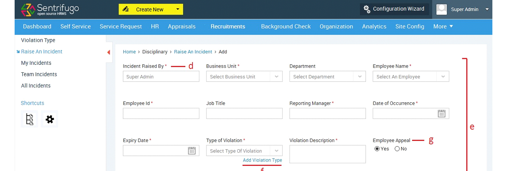
- Incident Raised By field will be auto populated
- Enter the required details
- Click Add Violation Type to add a new violation type
- Choose Yes to allow an employee appeal and No to disallow an employee appeal
- Click SAVE button.
How do I view my disciplinary incidents?
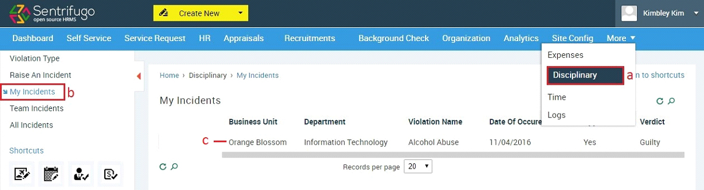
- Click Disciplinary in the top menu
- Click My Incidents on the left menu panel
- Click on the record to view details.
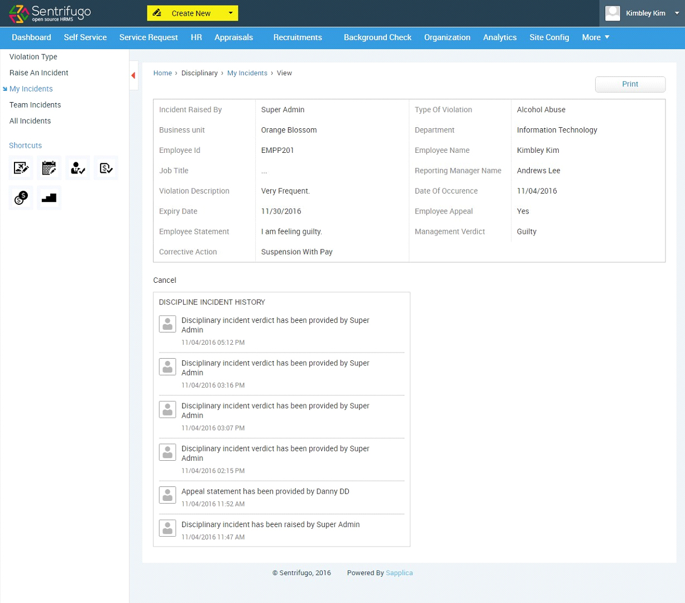
How do I view my team members’ (employees) disciplinary incidents?
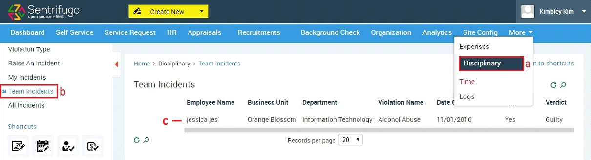
- Click Disciplinary in the top menu
- Click My Incidents on the left menu panel
- Click on the record to view details.
How do I provide my appeal statement?
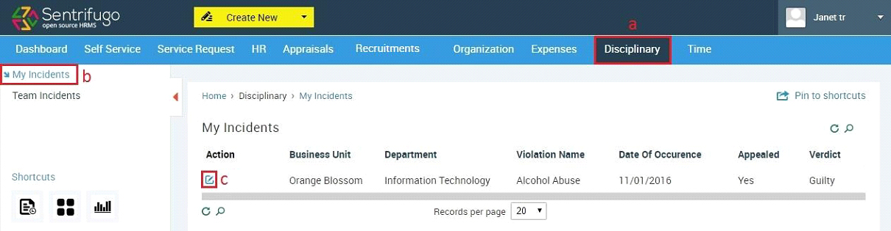
- Click Disciplinary in the top menu
- Click My Incidents on the left menu panel
- Click edit icon in the Action column
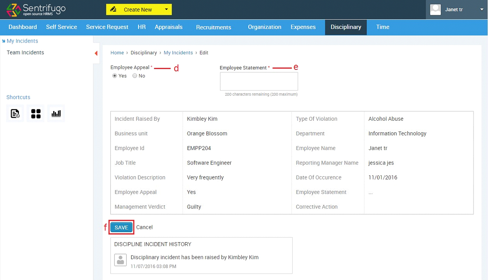
- Select Yes if you want to appeal and No if you don’t want to appeal
- Provide your statement in the Employee Statements textbox
- Click SAVE button